One of the 2 sapient species that inhabit the planet of Rodrigonia. They're basically humans but bigger (the average male Rodrigonian height being 256cm and the average female Rodrigonian height being 250cm) and resistant to extreme (like 10^12 atm extreme) pressures.
Rodrigonians have notoriously heavy bones (to the point an adult Rodrigonian weighs around 1 to 1.2 metric tons) and their everyting is adapted to their environment, including its 3.6g gravity.
They are also notorious for having a blue hair color and a blue skin hue, altough some Rodrigonians have hair spots with yellow or white colors. Rarely Rodrigonians have their entire hair yellow, white, or even more rarely, green, red or purple. exotic hair and skin colors are more common in their respective exotic biomes.
In very rare cirumstances their skin hue reflects their main hair color's hue.
Also it is known that yellow and white Rodrigonian hair can have blue spots.
Colors and fraction of Rodrigonians that have them are as follows:
Note that similar colors are grouped together.
Blue
5/6
Yellow
5/72
White
5/72
Cyan
1/216
Green
1/216
Red
1/216
Purple
1/216
Others
2/216
Patterns and fraction of Rodrigonians that have them are as follows
These do not have fixed proportions, especially the Others category which represents rare patterns.
Plain
Common
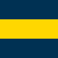
Horizontal Stripe
Uncommon
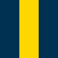
Vertical Stripe
Uncommon
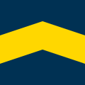
Chevron
Uncommon
Polygon
Uncommon
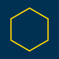
Polygon Border
Uncommon
Star Polygon
Uncommon
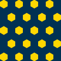
Repeated Small Hexagons
Rare
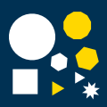
Irregular arrangement of polygons and star polygons
Rare
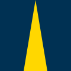
Tapered Vertical Stripes
Rare
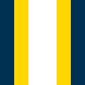
Stacked Stripes
Very Rare
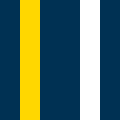
Multiple Stripe
Very Rare
Multiple Chevrons
Very Rare
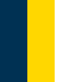
Tricolor
Very Rare
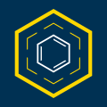
Others
Extremely Rare